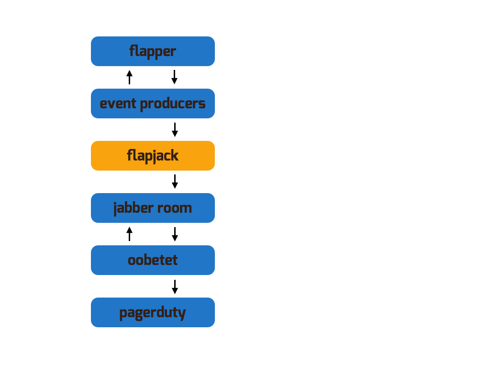

“Out Of Band, End To End Test” (oobetet) is a self-check mechanism that verifies the stream of events from the upstream event producers is current, and that Flapjack is able to emit alerts in a timely fashion to a Jabber multi user chat room.
The oobetet verifies this currency of the event stream by sitting in a Jabber multi user chat room and watching for problem and recovery notifications for a specific check.
If the oobetet does not observe state changes within a certain timeframe, it fires an alert, via Jabber or PagerDuty.
This helps you identify when your upstream event producers have gotten stuck, e.g. Nagios has hung, the node has gone away, etc.
Oobetet works like this:

Flapper is a process that oscillates between up (listening on a TCP port) and down (not listening). By default, the oscillation frequency is 2 minutes. This frequency is user-tunable.
Your check execution engine (e.g. Icinga, Sensu, Nagios, …) is configured to monitor the Flapper with a high frequency (e.g every 10 seconds), and passes on the results of all checks to Flapjack’s event processor (via flapjack-nagios-receiver or flapjackfeeder).
Flapjack is configured with a contact that is interested in the Flapper check, and who has one of the Jabber chat rooms as its Jabber contact address. Flapjack will therefore generate alerts in this Jabber chat room about Flapper going up, down, up, down, continuously.
The oobetet pikelet connects to the Jabber server and joins the room to which Flapjack is sending alerts for Flapper. It then watches for alerts in the chat room for Flapper. If it detects that Flapper doesn’t change state within a period of time (we recommend 5 minutes), it will fire an alert, both by Jabber back into this chat room, and to PagerDuty.
Here is an example oobetet config from the Flapjack configuration file:
oobetet:
enabled: yes
server: "jabber.example.com"
port: 5222
jabberid: "flapjacktest@jabber.example.com"
password: "nuther-good-password"
alias: "flapjacktest"
watched_check: "Flapper"
watched_entity: "flapper-on-nagios-01.example.org"
max_latency: 300
pagerduty_contact: "11111111111111111111111111111111"
rooms:
- "flapjacktest@conference.jabber.example.com"
- "gimp@conference.jabber.example.com"
- "log@conference.jabber.example.com"
logger:
level: INFO
syslog_errors: yes
The key configuration directives are:
watched_check - what check should the oobetet should watch for the state change.watched_entity - what entity that check should be associated with.max_latency - the maximum amount of time allowed to pass between state changes on that check.pagerduty_contact - the API key for a service in PagerDuty that the oobetet will use to alert youserver, port, jabberid, password - Jabber server connection and authentication credentialsrooms - Jabber rooms to joinThe upstream monitoring check is expected to switch between states within that time period. If it does not, an alert will fire.
Assuming you’re running Nagios as your check execution engine, and your Nagios is hooked up to Flapjack with flapjack-nagios-receiver, here’s an example Nagios config to setup a flapping service:
define host {
use base
host_name flapper-on-nagios-01.example.org
alias flapper-on-nagios-01
address 192.168.100.10
}
define service {
use base
host_name flapper-on-nagios-01.example.org
service_description Flapper
check_command check_tcp!12345
check_interval 10
retry_interval 10
}
define command {
command_name check_tcp
command_line $USER1$/check_tcp -H $HOSTADDRESS$ -p $ARG1$
}
Flapjack ships a Flapper service that the above check_tcp check queries. The Flapper service oscillates between opening and closing TCP port 12345, at a user-specified frequency (the default is 120 seconds).
You start it like this:
flapper start
With the above configuration:
flapjack-nagios-receiver